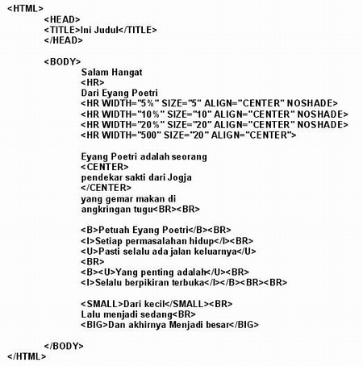
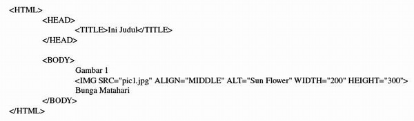
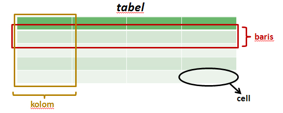
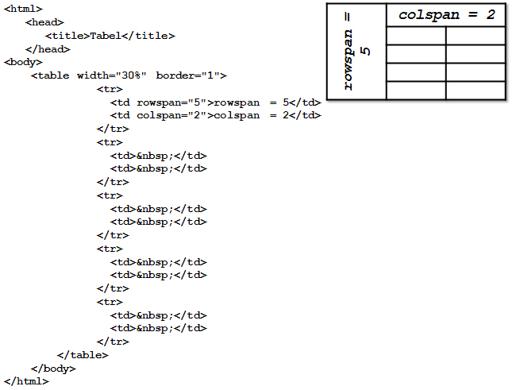
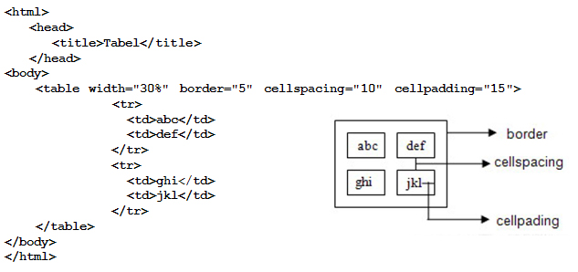

| Modul 1 - HTML Dasar |
What is HTML???
HTML adalah sebuah bahasa yang dipergunakan untuk mendeskripsikan halaman web.
- HTML adalah singkatan dari Hyper Text Markup Language
- HTML is not a programming language, it is a markup language
- Markup language adalah kumpulan dari tag tertentu
- HTML menggunakan tag untuk menggambarkan web page
HTML Tags

HTML markup tags biasa disebut dengan tags
- HTML tag adalah keyword yang diawali dan diakhiri dengan tanda kurung "<" dan ">"
- HTML tag biasanya berpasangan
- Tag pertama adalah start tag, tag kedua adalah end tag
- Tag tersebut disebut juga opening tags dan closing tags
HTML Documents = Web Pages
- HTML documents menggambarkan halaman web
- HTML documents terdiri dari HTML tags dan plain text
- HTML documents disebut juga web page
HTML document dibaca dengan menggunakan web browser, seperti like Internet Explorer atau Firefox, dan kemudian ditampilkan sebagai web page. Browser tersebut tidak menampilkan HTML tags, tapi tag tersebut diterjemahkan menjadi isi dari page.
Keterangan:
- Kerjakan semua latihan yang diperintahkan
- Gunakan Code Editor untuk mengerjakan
- Beri nama file sesuai ketentuan (cth: L1a0440023.html)
- Lihat hasilnya pada browser setiap kali selesai mengerjakan satu latihan
- Lapor pada dosen apabila telah selesai mengerjakan semua latihan
- Save file-file latihan untuk dipelajari di rumah
|
Format Dasar File Dokumen HTML
berikut adalah format dasar dari HTML
L1a<NRP>.html

|
Heading
Pada dokumen HTML terdapat 6 ukuran heading mulai dari H1 sampai dengan H6
H1 adalah heading dengan ukuran terbesar dan H6 adalah heading dengan ukuran terkecil
L1b<NRP>.html

|
HR, CENTER, B, I, U, SMALL dan BIG
Pada dokumen HTML untuk membuat suatu garis mendatar / horisontal dapat menggunakan tag HR
Tag HR memiliki attribut seperti WIDTH untuk mengatur panjang garis, SIZE untuk mengatur
ketebalan garis, ALIGN untuk mengatur alignment, dan NOSHADE untuk menghilangkan efek
bayangan
L1c<NRP>.html

|
SUB, SUP, TT, DEL, PRE, FONT
Pada dokumen HTML tag SUB digunakan untuk memberikan efek subscript pada suatu teks, dan
tag SUP digunakan untuk memberikan efek superscript pada suatu teks sedangkan tag TT
digunakan untuk memberikan efek mesin ketik pada suatu teks. Tag DEL digunakan untuk
memberikan efek coretan pada suatu teks.
Tag PRE pada dokumen HTML digunakan untuk melakukan preformat terhadap dokumen
HTML. Artinya teks yang akan ditampilkan akan sama keadaannya seperti yang tertulis pada kode HTML nya.
L1d<NRP>.html

|
LIST
Pada dokumen HTML terdapat dua jenis list, yaitu unordered list dan ordered list.
Unordered list adalah suatu list yang tidak memperhatikan urutan penomoran sedangkan ordered list
adalah list yang memperhatikan urutan penomoran.
Untuk membuat suatu unordered list menggunakan tag UL sedangkan untuk membuat ordered list
menggunakan tag OL.
Dan untuk mengisikan item pada list menggunakan tag LI
L1e<NRP>.html

|
Image
Tag IMG pada dokumen HTML digunakan untuk menambahkan gambar pada suatu halaman web.
Untuk menambahkan gambar dapat dilakukan dengan mengubah nilai atribut SRC disesuaikan
dengan nama file gambar yang diinginkan.
Selain atribut SRC, tag IMG juga memiliki atribut lain seperti ALIGN, BORDER, ALT, HEIGHT,
dan WIDTH.
Atribut ALIGN digunakan untuk mengatur aligmen. Nilai yang bisa diberikan pada atribut ALIGN
adalah TOP, MIDDLE, dan BOTTOM.
Atribut BORDER digunakan untuk menentukan ketebalan garis tepi dari suatu gambar.
Atribut ALT digunakan untuk memberi keterangan ketika suatu gambar gagal untuk ditampilkan ke
web browser.
Atribut HEIGHT dan WIDTH digunakan untuk mengatur tinggi dan lebar gambar.
L1g<NRP>.html

|
Link
L1h<NRP>.html

|
Tabel
Digunakan untuk menyajikan data dalam bentuk kolom dan baris, tujuannya agar informasi dapat ditampilkan secara lebih terstruktur dan tabular.
Struktur Tabel

Tag-Tag pada Tabel

|
Struktur dasar Tabel
berikut adalah format dasar dari sebuah tabel

|
Colspan & Rowspan
Colspan & Rowspan berfungsi untuk menggabungan beberapa baris atau kolom pada sebuah tabel. Pada aplikasi pengolah text (MS Word, Open Office), kita mengenal yang disebut dengan Merge.

|
Border, Cellspacing & Cellpadding
- Border: Mengatur garis tepi pada tabel
- Cellspacing: Mengatur jarak antara satu cell dengan cell yang lain
- Cellpadding: Mengatur jarak antara tepi cell dengan isi cell

|
Tugas 1a - Membuat Curiculum Vitae
T1a<NRP>.html
Tugas Kali ini akan membuat Curiculum vitae diri Anda.. contoh tugas dapat dilihat
disini.
Contoh tersebut merupakan gambaran minimal yang harus terdapat pada tugas Anda.
Anda diajak untuk ekplorasi membuat tugas menjadi sekreatif dan semenarik
mungkin dengan menggunakan Tag HTML yang telah diajarkan.
|
Tugas 1b - Memperbaiki Curiculum Vitae (Tugas 1a)
T2a<NRP>.html
Perbaiki Tugas 1a sebelumnya dengan menggunakan tabel agar menjadi lebih rapih. contoh tugas dapat dilihat
disini.
Contoh tersebut merupakan gambaran minimal yang harus terdapat pada tugas Anda.
Anda diajak untuk ekplorasi membuat tugas menjadi sekreatif dan semenarik
mungkin dengan menggunakan Tag HTML yang telah diajarkan.
|
Tugas 1c - Membuat Daftar Film
T2b<NRP>.html
Buatlah 10 buah daftar film favorit kalian. contoh tugas dapat dilihat disini.
Pada contoh hanya ada 5, tambahkan 5 lagi. Buatlah semenarik mungkin.
|
Tugas 1d - Membuat Halaman Index
index<NRP>.html
Letakkan semua latihan dan tugas pada modul 1 kali ini di dalam sebuah folder dengan nama tugas2-nrp (contoh: tugas2-043040023). kemudian buatlah sebuah halaman index di dalam folder tersebut yang merupakan link untuk melihat latihan-latihan dan tugas Anda. Ketentuan pada halaman index adalah sebagai berikut :
- Title pada halaman index bertuliskan "index tugas1 <NRP>"
- Tuliskan nama dan npm pada bagian atas halaman menggunakan tag komentar
- Link pertama sampai ke-delapan mengacu kepada file L1a<NRP>.html sampai L1h<NRP>.html
- Link ke-sembilan mengacu kepada halaman T1a<NRP>.html
- Pada setiap halaman latihan dan tugas, berikan link yang mengacu kembali ke halaman index tugas1.
|
Keterangan Pengiriman Tugas
- Compress folder tugas2 tersebut menjadi file ZIP dengan nama [itw2018X] tugas2-NRP-nama_lengkap.zip
- Dengan X adalah nama kelas kalian, contoh: [itw2018a] tugas2-043040023-Sandhika_Galih
- Kirimkan tugasnya ke email masing2 dosen sesuai kelas
- Tulis subject email sesuai dengan nama file zip-nya
- Kumpulkan paling lambat SEBELUM KULIAH PERTEMUAN BERIKUTNYA
|
{kind=link}
{kind=link}
{kind=link}